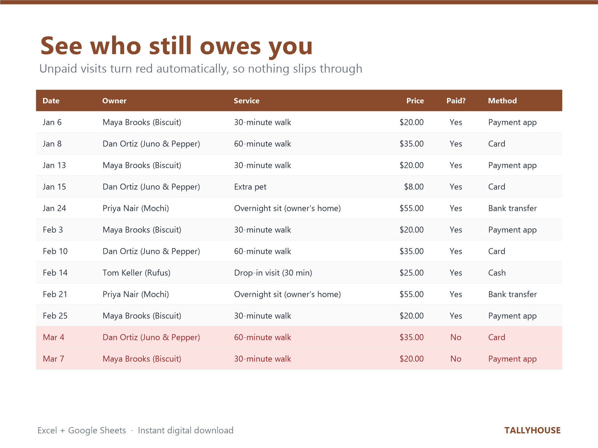

Unpaid walks rarely start as a big problem. One owner says "I'll send it Friday", a text gets buried, and a month later you cannot remember which visits were covered. The fix is a simple routine, not a complicated system.
1. Log every visit the same day
Write down the date, the owner, the service and the price as soon as the visit is done. If it waits until the weekend, details get lost.
2. Mark each visit paid or unpaid
Use one clear yes/no column. Do not rely on memory or on scrolling through messages. When a payment arrives, change that visit to paid.
3. Total it by owner
A list of unpaid visits is useful, but what you really need is the amount per owner. That tells you who to message first and how far behind each person is.
4. Check once a week
Pick a regular time, such as Sunday evening. Go through the unpaid list and send a short, polite reminder with the dates and the amount.
5. Agree the rules in advance
Tell new clients when you expect payment, for example within seven days or before the next visit. Having it in writing makes reminders easier and less awkward.

The Tallyhouse spreadsheet does this for you. The Visits tab turns unpaid visits red, the Owners tab totals what each owner has been billed and still owes, and the dashboard shows your total unpaid next to revenue, expenses and profit.
Keep your unpaid visits in one place
The Dog Walking Business Back Office spreadsheet logs visits, owners, expenses and mileage. It works in Excel and Google Sheets. One-time $7.99, instant digital download.
See the dog walking spreadsheet